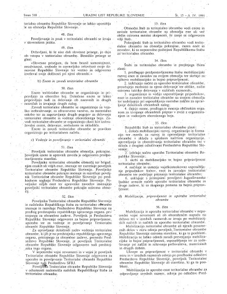
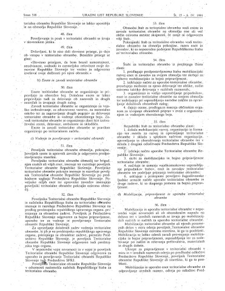

OSAMOSVAJANJA

SLOVENSKIH
OBRAMBNIH SIL


ČASOPISJU
MSNZ je bila skrivna organizacija, ki je nastala prav v dneh odvzemanja orožja Teritorialni obrambi. Formalno pokritje je imela v organizaciji Narodne zaščite, ki je bila del sistema splošnega ljudskega odpora.


Slovenija je pristojnost nad republiško TO pridobila z ustavnim amandmajem, ki ga je sprejela slovenska skupščina konec septembra 1990. Predsedstvo Republike Slovenije je nato odstavilo generala Hočevarja in imenovalo majorja Janeza Slaparja, dotedanjega poveljnika Pokrajinskega štaba TO za Gorenjsko, za vršilca dolžnosti načelnika RŠTO. Ta je ob predhodnem soglasju Predsedstva Republike Slovenije imenoval še poveljnike pokrajinskih štabov TO. S tem so prenehali tudi razlogi za delovanje MSNZ – slednjo so razpustili, večino njenih pripadnikov pa razporedili v sestavo nove TO.
V odgovor na zamenjavo poveljnika RŠTO je JLA v noči s 4. na 5. oktober 1990 zasedla nekdanje prostore Republiškega štaba Teritorialne obrambe v Ljubljani in v njih vztrajala šest mesecev. RŠTO pod poveljstvom Janeza Slaparja se je preselil v prostore Republiškega sekretariata za ljudsko obrambo.
ČASOPISJU

PO SLOVENSKI
VOJSKI


ČASOPISJU
ČLANOM PREDSEDSTVA REPUBLIKE SLOVENIJE IN ČLANOM IZVRŠNEGA SVETA RS, KI SO PODPISALI TAKO IMENOVANO »DEKLARACIJO ZA MIR«
Spoštovani!
Dovolite mi, da Vam ukradem nekaj dragocenega časa in Vas na tak, povsem neformalen način obvestim o nekaterih pomislekih in vprašanjih, ki se mi pojavljajo ob prebiranju zgoraj omenjene deklaracije.
Mirovna iniciativa je potrebna, tudi če v določenem trenutku ni realna. Gre na eni strani za vizijo prihodnosti, ki naj bo, kolikor je mogoče, brez nasilja, na drugi strani pa tudi za konkurenco težnjam po sli kot prevladujočem instrumentu za reševanje konfliktov ter za nadzor nad državnimi institucijami represije. Za družbo kot celoto je v vsakem primeru dobro, če v njej obstajajo močna mirovna gibanja in če imajo mirovne iniciative podporo.
Toda eno je, če zbira podpise civilna iniciativa, drugo pa, če je to močna politična akcija različnih strank, ali če to delajo člani organa, ki je vrhovni poveljnik oboroženih sil v republiki, in ki ima po veljavni ustavi ne samo pravico, temveč tudi dolžnost, da vodi in organizira obrambo, vključno z oboroženim bojem. Tudi če sami mislimo, da je možno praktično ločiti npr. g. Milana Kučana kot občana od g. Milana Kučana kot predsednika predsedstva RS, pa seveda ljudje tega ne ločijo. To je dejstvo, pa če nam je všeč ali ne in posledice dejanj so politične tudi v primeru, če jih politik stori povsem osebno.
V deklaraciji je med drugim zapisana zgodovinska neresnica (v Sobotni prilogi Dela je sestavek Janeza Švajncerja, zato se pri tem ne ustavljam) ter hkrati navedena najmanj ena formulacija, ki zavaja javnost in s strokovnega vidika ne vzdrži kritike. Mislim na stavek, v katerem piše, da bomo v prehodnem obdobju varnost zagotavljali s »policijo in TO v sedanjem obsegu«.
TO v stalni sestavi za zdaj nima vojakov. TO so rezervne vojaške formacije, sestavljene iz obveznikov pretežno starejših letnikov. Če ni vojaškega usposabljanja mlajših letnikov, se struktura rezerve postara brez ustreznega nadomestila. Tudi če kdo misli, da bo »obdobje negotovosti« trajalo samo dve leti, tovrstno staranje predstavlja resen problem. V trenutku, ko brez ustreznega nadomestila v lastnem vojaškem usposabljanju prenehamo pošiljati nabornike v JLA, je avtomatično prekinjen tudi dotok mladih obveznikov s svežim vojaškim znanjem v TO.
Poleg tega, kdo bo v tem času ljudem pojasnil, da nekateri (starejši!) letniki so obvezniki, drugi (mlajši) pa niso? V vseh državah namreč obramba temelji pretežno na generaciji med dvajsetim in tridesetim letom, pri nas pa bi jo vezali na štiridesetletnike? In s kakšno pravico bodo eni obvezniki, drugi pa ne? Kje je tukaj enakost pred zakonom? Ne, ta zadeva ni tako enostavna, kot se komu na prvi pogled zdi. Projekta nacionalne varnosti se je treba lotiti resno. Vprašanje je usodno za slovensko osamosvajanje in za zavarovanje slovenske samostojnosti, ko bo dosežena in priznana. Če lahko kod odloči o tem, da se razorožimo oziroma da lastno varnost zagotavljamo brez armade, potem so to lahko samo Slovenci in prebivalci bodoče suverene države same. Rešite, do katere bi lahko prišli na tak način, pa mora biti čista. Nemogoče je igrati na karto nekje vmes, kot to poskuša Deklaracija s formulacijo o »policiji in TO v sedanjem obsegu«. Ali transformacija sedanjih obrambnih struktur Slovenije in deloma JLA v normalno, parlamentarno nadzorovano in ekonomski moči družbe prilagojeno strukturo, ali pa popolna ukinitev vseh oboroženih formacij(z izjemo mirnodobnega sestava policije). Sestava oboroženih sil mora biti namreč po kvaliteti in kvantiteti takšna, da je zadostna oziroma da ustreza ciljem. Po dokaj usklajenem mnenju strokovnjakov je Slovenija sposobna brez prevelikega obremenjevanja družbe zagotoviti zadostno kvantiteto in kvaliteto oborožene obrambe. Če le ta ni zadostna, potem je res bolje, da se ne igramo, saj v tem primeru zgolj neodgovorno izpostavljamo žrtvovanju tisto peščico, ki naj bi nas po mnenju sestavljalcev deklaracije branila. V tem primeru pa seveda tudi predlagam, da projekt osamosvajanja obesimo na klin in se ne igramo z usodo naroda, saj bi ravnali podobno, kot nekdo, ki stopi na mraz, pri tem pa sleče še suknjič, namesto, da bi oblekel plašč.
Živimo v zelo občutljivem času. Nikakršne garancije nimamo, da se ta občutljivost ne bo spremenila v oborožen konflikt ali celo v državljansko vojno. V tem primeru bodo, o tem ste lahko stoodstotno prepričani, ljudje zahtevali predvsem varnost. Na žalost se le-te ne more vedno zagotoviti samo z deklaracijami. Nihče, ki je bil legitimno izvoljen na katerokoli odgovorno mesto v vseh vejah oblasti v Sloveniji, nima nikakršne pravice, da ignorira realnost in govori, da je svet s konflikti in z orožjem utopija. Nasprotno. Na žalost je tak svet zelo kruta realnost in nič manj kruta ne bo, če tega ne bomo videli ali se delali, kot da nam nihče nič ne more. Sprenevedanje lahko nevarnost zgolj poveča, hkrati pa ogrozi tudi procese realne demilitarizacije, ki vsaj v nekaterih delih razvitega sveta dejansko potekajo. S tem da tam temeljijo na spreminjajoči se zavesti ljudi in ne na fizičnem odmetavanju orožja. Temeljni problem nasilja leži v človeku, ne pa v ekonomiji ali v orožju. Če orožja nihče ni prisiljen ali celo pripravljen uporabiti, je tako ali tako relativno nenevarno. Demilitarizacija predstavlja proces, ki ne more biti absolutno omejen na eno državo ali narod ali občino. Še več. Povsem razorožena država, obdana s sosedi, ki so močno oboroženi, je praktično težko dejavnik stabilnosti v regiji ali na celini. Vprašajte tuje diplomate, kaj mislijo o tem. Res je, da več orožja globalno pomeni dodatno nevarnost, toda še večjo nevarnost za mir predstavlja nenadoma porušeno ravnovesje v regiji, ki se lahko konča z oboroženim konfliktom tudi z manj orožja.
V JLA v Sloveniji je večje število starešin Slovencev in Neslovencev, ki so na začetku ali na sredini svojega službovanja in katerim smo na nek način zagotavljali, da v primeru osamosvojitve Slovenije ne bodo ostali brez dela. Poleg osebnih ima podobna generacija tudi druge, politične pomene. Če rečemo: »Obdržali bomo samo TO v sedanjem obsegu,« potem seveda nihče ne bo več videl kakih posebnih možnosti, da svojo poklicno kariero nadaljujejo npr. v TO in se bo bolj oklepal službe, ki jo za zdaj ima.
Ameriški senator Denis De Concini je konec januarja letos v ameriškem parlamentu izrekel tudi naslednjo misel, ki nam ob vsem, kar mi vsi skupaj vemo, ni pa javno znano, lahko ponudi dodatno snov za razmišljanje in tudi zaskrbljenost. Dejal je, da so razmere pri nas take, da je povsem možno, da se 20. stoletje tudi konča tako, kot se je začelo: Z vojno na Balkanu.
Občutljivost vprašanja nacionalne varnosti terja od vseh, ki se z njim tako ali drugače poklicno ukvarjajo (in člani predsedstva in vlade zagotovo brez izjeme spadajo sem), profesionalen odnos, ki ne dovoljuje vedno cenenega nabiranja političnih točk. Sam sem prepričan, da pri ogromni večini podpisnikov deklaracije za mir ne gre ne za politikantstvo in ne za nasprotovanje slovenski osamosvojitvi, temveč za iskreno zavzemanje za tisto, kar dokument ponuja v naslovu, tj. zavzemanje za mir. Problem pa je v tem, ker v podrobnostih (ki jih večina ne prebere podrobno) deklaracija en ponuja zgolj zavzemanja za mir, temveč je po vsebini »zahteva po hitri enostranski razorožitvi«, ki nam ne bo prinesla niti miru niti samostojnosti. Ker so med podpisniki močne politične stranke, so stavki deklaracije s tem avtomatično točke političnega programa in ne samo občanska iniciativa.
Naj vas ob koncu spomnim še na rezultate SJM 1990, ki decembra lanskega leta ugotavlja, da je samo 15 % prebivalcev Slovenije za hitro enostransko razorožitev, vsi ostali pa so za lastno vojsko vsaj v prehodnem obdobju.
In morda zgolj kot motiv za droben razmislek še naslednji citat:
Winston S. Churchill, Druga svetovna vojna, I. poglavje: Pot v katastrofo:
»Kot eden tistih, ki so takrat živeli in delovali, bi rad pojasnil, kako lahko bi preprečili tragedijo druge svetovne vojne in kako je zlobo podležev pospeševala slabost spodobnih ljudi ... Videli bomo, kako nasveti previdnosti in zmernosti lahko postanejo glavni vzrok smrtne nevarnosti, kako srednja pot, izbrana v želji po varnosti in mirnem življenju, lahko pripelje naravnost v največje zlo.«
Prosil bi vas, da to pismo ostane interne narave,
Lep pozdrav in brez zamere!
Janez Janša
Ljubljana, 25. 2. 1990
Poslano tudi:
– predsedniku skupščine RS
– predsedniku IS RS
Spletni vir: Pismo Janeza Janše Predsedstvu, UKOM.
ČASOPISJU


 


ČASOPISJU
PREJ